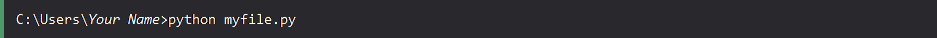

Execute Python Syntax
You are currently on the "Execute Python Syntax" section of the website.
If you wish to return to the Home Page, you need to click on "Ten Things to Know About Discovering Python: A Beginner's Guide" or simply click here.
As we learned in the previous page, Python syntax can be executed by writing directly in the Command Line:
Or by creating a python file on the server, using the .py file extension, and running it in the Command Line:
